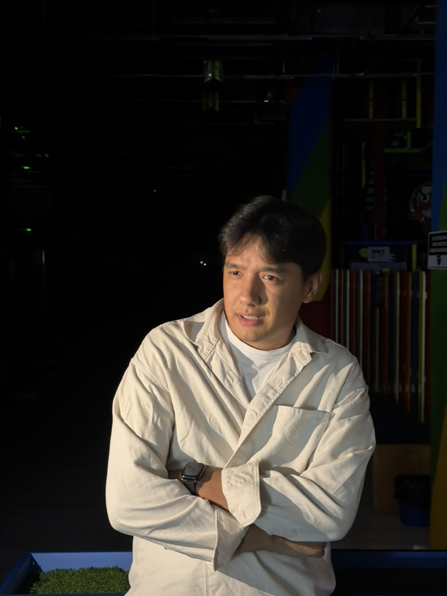
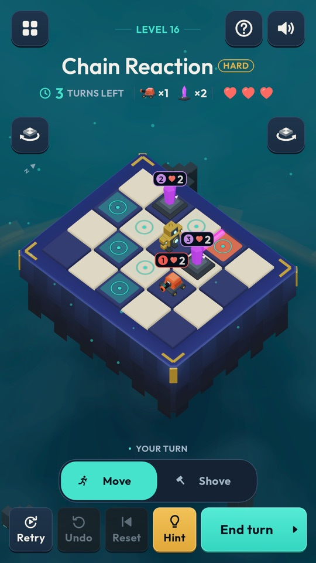
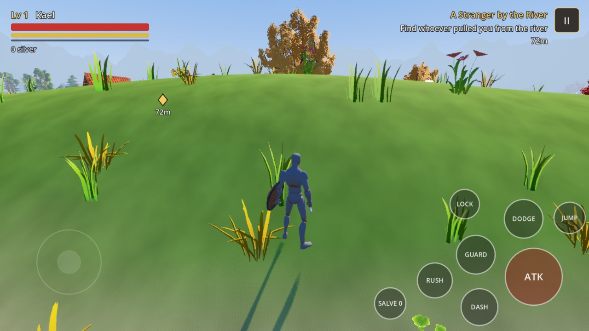

Two games in progress, both in Godot. The first, Chrono Spires, is a turn-based puzzle game on floating islands: every machine shows its next move, and your Golem shoves them into the void.
In progress · Google Play closed test next
CS/ 2026
32
levels
4
worlds
0
ads.
From ledgersto levels.
2023
Fuel and figures. Joined Green Group LLC as fuel department manager for a US trucking fleet, and started a BSc in accounting and finance.
2024

2025
A firm of my own. Co-founded T&M Financials to handle invoicing for independent US truckers. Reached the EY Career Launch final, and won high priority at the Deloitte Case Competition.
2026

Chrono Spires · Android

PocketPywel · iPhone
Now
From ledgers to levels. Technical specialist at Exely, working through the ACCA, and building two games of my own in Godot.
From theworkshop.
PocketPywel is an open-world action RPG for phones, inspired by Crimson Desert. Chapter 1 runs on iPhone: Kael, a sellsword of the Ashen Hounds, washes up near Millbrook and takes on the Redcloak bandits.